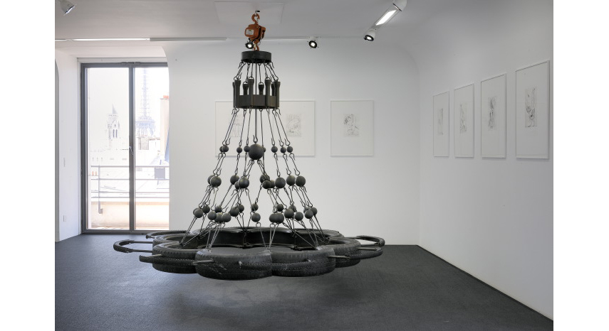

“Energeia akinesis” means energy without movement, such as a force not based on any dynamic. This sculpture is inspired by the chandelier "Crown of Light" designed by Viollet-Le-Duc installed in Notre-Dame de Paris at the time of its restoration in the 19th century; the chandelier received harsh criticism at the time and Viollet-Le-Duc was accused of adulterating the legacy of the church. This quarrel about authenticity and the the absolute necessity of creating a rupture between objects belonging the past and objects belonging to the present is symptomatic of the modern cult of objects. This piece, composed of truck and bicycle wheels and chains, evokes the idea of displacement in both time and space.
